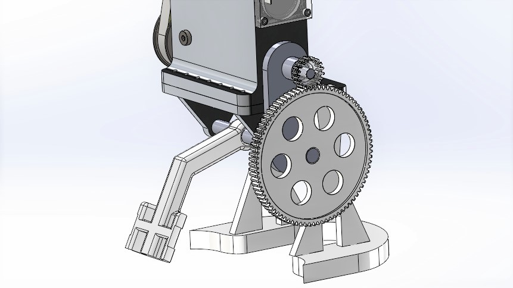
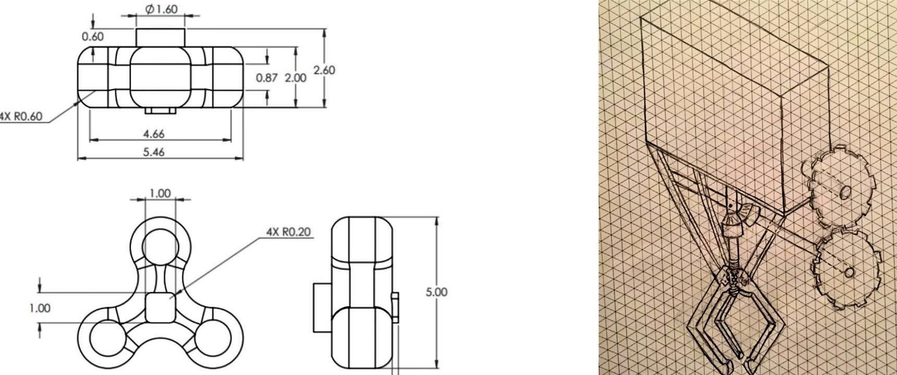
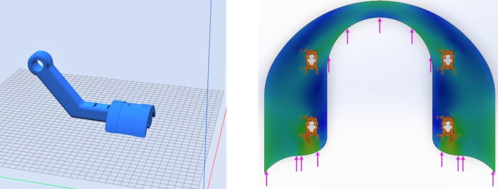
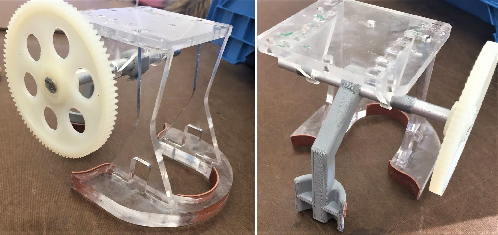

The "gripper" project challenges students to design and fabricate the lightest robotic end effector which will lift and stabilize an irregular object through dynamic swinging. The gripper needed to interface with the motor and arm assembly for mounting and power transmission. Teams were required to budget spending and defend design rationale through iterations, with the final deliverable being tested for functionality.

The mystery object of choice was a large metal mock "fidget spinner." Using only power transmitted from a motor, the spinner needed to be secured as the arm swung 180 degrees. The mechanism would need to reliably ungrip and regrip upon motor reversal, and could only contact the spinner on the top and side faces.
Brainstorming potential actuators for gripping led to comparisons between bevel and worm gears, cables or strings, and direct shaft mounting. We sketched out potential "claw" and swinging arm designs, mocking up candidates which could stabilize the theoretical load without interfering with the spinner.

In the process of producing robust and functional models of our end effector, considerations for manufacturing were central; the main factors influencing our design being the speed and cost of candidate processes, and material selection. We elected to laser cut acryllic for our structural members, and to 3D print our dynamic arm, allowing us to produce many functional prototypes while remaining under budget. Best practices for designing components for rapid manufacturing technqiues inspired the part forms.
As we attempted to optomize our design for mass, it became important to simulate the loading experienced by each component in the end effector. With the design being comprised of seperate parts adhered together, we studied the end effector using FEA tools on each component individually, and ran simulations with the assembly as a whole. Visualizing the loading allowed us to refine our designs and shed mass from overbuilt parts without compormising the structural integrity.

Our end effector was manufactured and tested for the final review, where we performed amongst the top groups in the competition with regards to functionality and optomized mass!